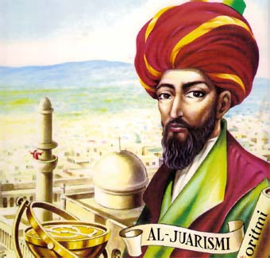
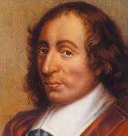

Diagramacion y algoritmo
Tema primera clase

Algoritmos de Uclides
El algoritmo de Euclides es un método antiguo y eficiente para calcular el máximo común divisor (MCD). Fue originalmente descrito por Euclides en su obra Elementos. El algoritmo de Euclides extendido es una ligera modificación que permite además expresar al máximo común divisor como una combinación lineal

Al-Jurismi
Su obra, Comprendio de cálculo por reintegración y comparación, presentó la primera solución sistemática de ecuaciones lineales y cuadráticas. Uno de sus principales logros en el campo del álgebra fue su demostración de como resolver ecuaciones cuadráticas con el método de completación de cuadrados, justificándolo geométricamente.

Leonardo de Pisa
fue un matemático italiano de la República de Pisa, considerado "el matemático occidental de mayor talento de la Edad Media". Difundió en Europa la utilidad práctica del sistema de numeración indo-arábigo frente a la numeración romana, y fue el primer europeo en describir la sucesión numérica que lleva su nombre.

Inversion del abaco
Esta tablilla para hacer cálculos está entre los numerosos inventos que Oriente Lejano ha dejado a la historia de la Humanidad. El origen del ábaco se suele fijar en las cuentas de cerámica halladas en un yacimiento arqueológico de la dinastía Zhou, que se extendió entre los años 1.122 a.C. y 249 a.C.

Sumadora da Vinci
La máquina de sumar de Leonardo Da Vinci fue una máquina mecánica de sumar inventada entre los años 1452-1519. Fue descubierta en 1967 por investigadores estadounidenses en la Biblioteca Nacional de Madrid en el Códice Madrid.

Charles Babbage
fue un matemático y científico de la computación británico. Diseñó y desarrolló una calculadora mecánica capaz de calcular tablas de funciones numéricas por el método de diferencias.

Leonardo Da Vinci
Nació el 15 de abril de 1452, y falleció el 2 de mayo de 1519 a sus 67 años, este señor fué polifacético, fué un Pintor, arquitecto, anatomista, paleontólogo, botánico, escultor, cientifico, escritor, ingeniero, filósofo, matemático, poeta, entre muchas cosas más. Además de ser conocido por ser el pintor de la "Mona Lisa", dió muchos aportes más, como dar a conocer por medio de sus pinturas como era la anatomía humana, y tambien la creacion de la Sumadora mecánica.

John Napier
Fué un matemático e inventor escocés, reconocido por ser el primero en definir los logaritmos. También hizo común el uso de la coma decimal en las operaciones aritméticas. Uno de sus mejores inventos fué la creacion de un instrumento, donde se podían realizar multiplicaciones, divisiones y raíces cuadradas, conocido como los huesos de Napier, bastones de Napier o varillas de Napier, este aparato constia en que Cada varilla contenía la tabla de multiplicar de una de las 10 cifras básicas de nuestro sistema de numeración decimal, 0, 1, 2, 3, 4, 5, 6, 7, 8 y 9.

Blaise Pascal
EL Francés, hizo contribuciones a la matemática y a la historia natural incluyen el diseño y construcción de calculadoras mecánicas, aportes a la teoría de la probabilidad, investigaciones sobre los fluidos y la aclaración de conceptos tales como la presión y el vacío. Este gran inventor matemático, en 1642 fabricó la primera calculadora a base de ruedas y engranajes.

Alan Turing
fue un matemático, lógico, informático teórico, criptógrafo, filósofo, biólogo teórico, maratoniano y corredor de ultradistancia británico.Es considerado uno de los padres de la ciencia de la computación y precursor de la informática moderna.